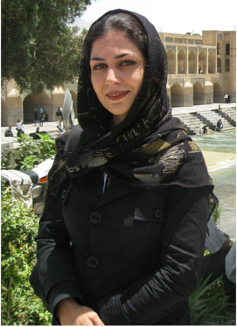

|
|

جایزه ادلستام 2012 برای بهاره هدایت: برای شجاعت فوق العاده و تعهد به عدالت فعالانه در برابر نقض حقوق بشر در ایران
چهار شنبه17 اسفند 1390

تغییر برای برابری - بهاره هدایت به دلیل شجاعت فوق العاده و تعهد به عدالت فعالانه در برابر نقض حقوق بشر
در ایران فعالیت کرده است. او علی رغم هشدارها و تهدید های نیروهای اطلاعاتی و امنیتی بارها زندگی خود و آزادی اش را برای دفاع از حقوق بشر به خطر انداخته ست. به همین دلایل، او بارها و بارها بازداشت شده و در حال حاضر در زندان است. بنیاد "هارالد ادلستم" او را یک زندانی عقیدتی می داند و از مقامات جمهوری اسلامی درخواست آزادی او را دارد.
جایزه ادلستام یک جایزه معتبر بین المللی است که از طرف بنیاد "هارالد ادلستام" در سوﺌد اراﺌه می شود. این جایزه به کسانی تعلق می گیرد که شجاعت و فعالیت برجسته ای را در دفاع از حقوق بشر از خود نشان داده اند.
جایزه ادلستام به یاد و خاطره "هارالد ادلستام" دیپلمات و سفیرسوﺌدی ١٩٨٩-١٩١٣ نام گذاری شده است. هارالد ادلستام با نشان دادن قابلیت حرفه ای و شجاعت مدنی خویش در راستای مبارزات حقوق بشری خود را به عنوان دیپلمات معرفی کرده است. او یکی از پایه گذاران و نمادهای اولیه اقدامی بوده است که امروزه به عنوان "مسئولیت در قبال حمایت از دیگران " نامیده می شود و سهم عمده ای در نجات جان بیش از هزار نفر داشته است.
برنده جایزه ادلستام می تواند به شخص خصوصی یا وابسته به سازمان دولتی ملی یا بین المللی تعلق گیرد. برنده می تواند هر فردی باشد که همانند هارالد ادلستام در کشور/ کشورهایی که حقوق بشر نقض می شود وارد عمل شده است. کاندیدای این جایزه همانا فردی است که توانایی های خارق العا ده ای را در ارزیابی و مدیریت موقعیت های پیچیده و پیدا کردن راه حل هایی هرچند غیرمرسوم اما کاربردی در راستای حمایت از حقوق بشر اراﺌه می کند. وی احتمالا تحت شرایطی حساس قادر به ایفای نقشی تعیین کننده جهت حمایت از افراد در معرض خطر یا نجات جان انسان ها بوده است. شجاعت مدنی عامل محوری در انتخاب کاندیدا مزبور است.
"هیئت داوران بین المللی"
هیئت داوران بین المللی به ریاست "کارولین ادلستام" نوه دختری هارالد ادلستام و یکی از بنیان گذاران مو سسه هارالد ادلستام است. اعضای دیگر این هیئت عبارتند از :" لوویس آربور" عضو عالی پیشین هیئت حقوق بشر به عنوان نماینده آمریکای شمالی، قاضی شیرین عبادی برنده جایزه نوبل سال٢۰۰٣ به عنوان نماینده آسیا، دکتر پاسکول موکومبی نخست وزیر پیشین موزامبیک به عنوان نماینده آفریقا، پروفسور فیلیپ آلستون گزارشگر فراقضایی سازمان ملل به عنوان نماینده اقیانوسیه، "ریکاردو لاگوس " ریاست جمهور پیشین به عنوان نماینده آمریکای لاتین و "بالتازر گارزون" که در خدمت دادگاه قضایی اسپانیا بوده است و همواره در راستای احقاق حقوق بشر فعالیت دارد به عنوان نماینده اروپا.
شهرت عمده بالتازر گارزون به خاطر فعالیت های او در راستای معرفی چهره واقعی پینوشه دیکتاتور شیلیایی است که مسئول مرگ و شکنجه شهروندان اسپانیایی بود.
Announcement of the Edelstam Prize Laureate 2012